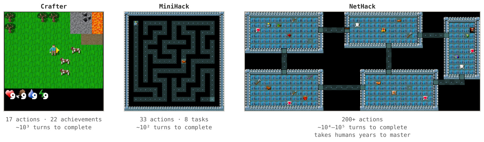
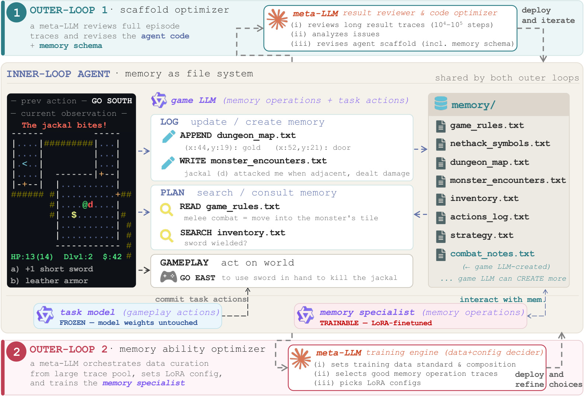
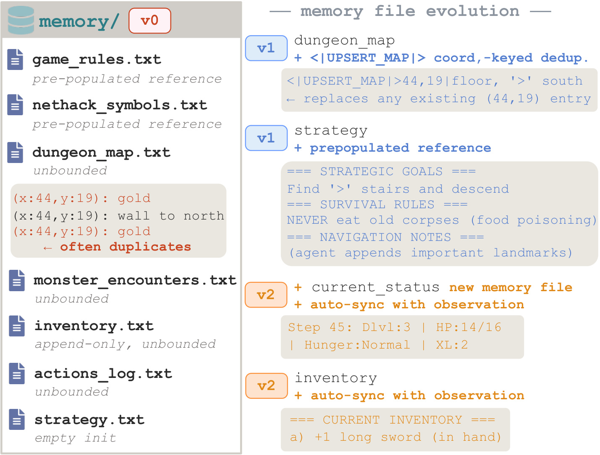
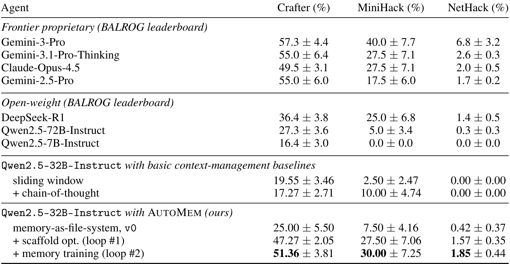
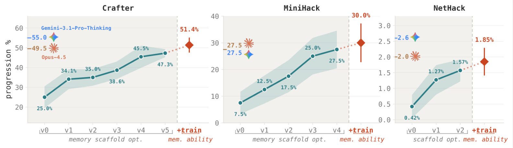
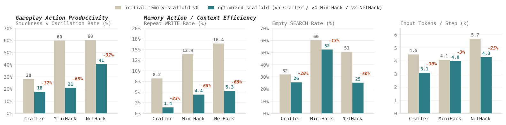
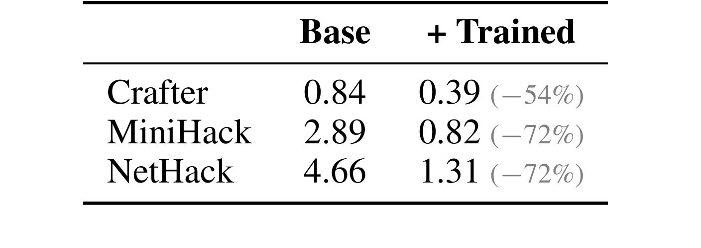
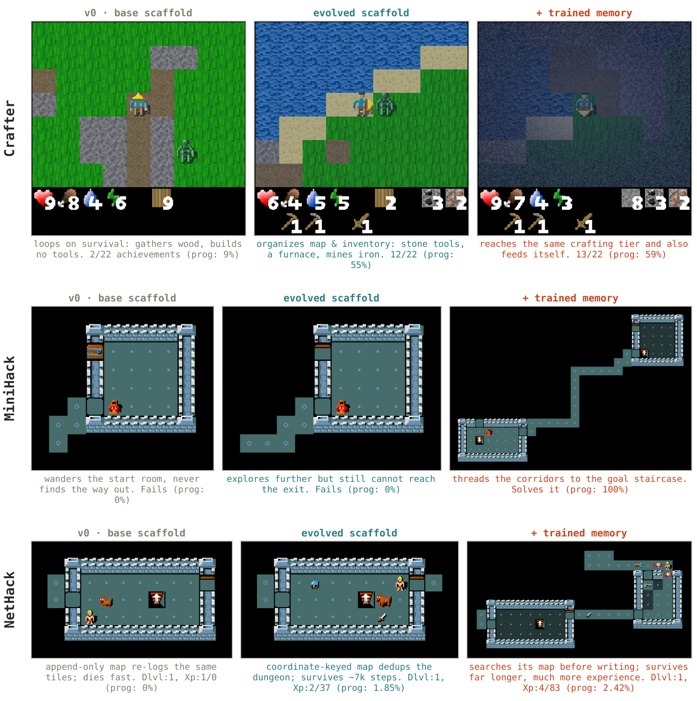

AutoMem：把记忆管理作为可自动学习的认知技能
- 论文：AutoMem: Automated Learning of Memory as a Cognitive Skill
- 作者：Shengguang Wu, Hao Zhu, Yuhui Zhang, Xiaohan Wang, Serena Yeung-Levy
- 机构：Stanford University
- 来源：arXiv:2607.01224
- 项目页：autolearnmem.github.io
- 方向：Agent memory, metamemory, long-horizon tasks, automated optimization
[toc]
1. 背景和问题
记忆专长不是把材料塞进外部存储，而是学会决定什么值得写入、何时检索、怎样组织；在数千到十万步的长时程任务中，一个早期记忆错误可能很久以后才暴露，人工审查完整轨迹几乎不可行。
AutoMem 的切入点很清楚：很多 LLM agent 的“记忆”仍然被设计成一个外接模块，比如检索库、摘要缓冲、向量存储、scratchpad 或固定的长短期记忆接口。模块本身可以缓解上下文窗口有限的问题，但它并不自动回答更难的问题：模型什么时候应该记、应该记成什么格式、什么时候先查再写、什么时候重组已有记录。论文借用认知科学里的 metamemory 视角，把这些判断看成一种可学习的认知技能，而不是系统工程师事先写死的 retrieval policy。
这个视角和普通 RAG 或长期记忆库的区别在于，AutoMem 关心的是“记忆操作的决策质量”。在长时程游戏里，agent 的上下文窗口像工作记忆，只能容纳有限历史；外部文件像人类笔记、地图、索引和任务清单。若模型只是不断 append 新观察，文件会很快膨胀，重复坐标、旧库存、过期策略和无效搜索结果会挤占注意力。相反，若模型知道什么时候 upsert 地图、什么时候先搜索旧记录、什么时候把策略文件预填成可读参考，它就可能在不改变世界动作模型权重的情况下明显提升任务表现。
论文选择 Crafter、MiniHack 和 NetHack 作为评测环境，不是为了证明 AutoMem 会玩游戏本身，而是因为这些环境把记忆压力显式放大：每个 episode 都是随机世界，预训练知识很难直接替代在线记录；任务跨度从几百步到十万步不等，单靠最近若干观察会很快失效；成功需要类似人类玩家的地图、库存、怪物遭遇、目标优先级和行动日志。这样的设定让“记忆管理是否是一项独立技能”变成可测问题。

Figure 2 展示了三个环境的难度梯度。Crafter 只有 17 个动作和 22 个 achievement，但 episode 仍然需要围绕采集、制造、战斗和生存持续维护状态；MiniHack 用 NetHack 引擎构造迷宫、走廊、Boxoban 和任务关卡，动作空间扩大到 33 个；NetHack 则有 200 多个动作、丰富物品和怪物、地牢层级与长期探索，单局可达一万到十万步。这个图的价值在于说明 AutoMem 并不是在短对话里测试“能否记住一条事实”，而是在延迟后果非常强的环境里测试记忆策略。若某一步没有记录楼梯位置，几百步后才表现为迷路；若地图文件不断重复坐标，几千步后才表现为上下文被无用行占满。图里的环境差异也解释了为什么论文后续同时看 progression rate、重复写入、空搜索率和每步输入 token，而不是只看最终分数。
这篇论文最值得关注的地方，是它把记忆拆成两个轴：结构和熟练度。结构指 scaffold，包括 prompt、代码、文件 schema、动作词表和自动验证逻辑；熟练度指模型在这些结构下做出好记忆决策的参数化能力。很多系统只优化其中一个轴：要么设计更好的 memory architecture，要么训练模型调用某个固定 memory module。AutoMem 的主张是，长时程任务里二者都需要自动化，因为人类很难逐步审查完整 trajectory，也很难手调出适配不同环境的 LoRA 数据和配置。
从工程角度看，这个问题和推荐系统、搜索系统里的长期用户状态也有相似性：真正难的不是“有没有一个库能存东西”，而是哪些事件值得写入、如何压缩重复记录、如何避免过期记忆污染决策、如何让读写行为本身可观测可优化。AutoMem 没有直接做推荐或搜索，但它提供了一种更通用的 agent memory 研究口径：把 memory operation 当成 action，让外层评审者能从完整轨迹中定位错误，再对结构和模型能力分别更新。
2. 方法
AutoMem 的方法部分可以按论文原始顺序读成三层：内层 agent 把文件系统当外部记忆；第一个外循环让 meta-LLM 改 scaffold；第二个外循环让 meta-LLM 组织数据和 LoRA 配置，训练一个专门处理记忆操作的 specialist。核心机制不是新增一个固定检索模块，而是把记忆读写提升为可观察、可训练、可审查的动作空间。 本文没有核心公式：论文没有给出新的损失函数、检索打分函数或闭式记忆更新公式，只给了进度率评测口径、LoRA 训练配置，以及“scaffold 参数与模型权重都可由 trajectory-level review 产生更新信号”的概念类比。因此这篇笔记不会伪造数学公式，后文只解释它真实使用的过程变量和实验指标。
2.1 Inner-loop agent: memory as file system
内层 agent 是每个 episode 里真正行动的模型。它拥有一个磁盘目录作为外部记忆，文件可以包括 game_rules.txt、dungeon_map.txt、inventory.txt、monster_encounters.txt、strategy.txt 等。关键变化是文件操作不再是幕后工具调用，而是和世界动作并列的一等动作：同一个模型前向过程可以选择 append、write、read、search、create，也可以选择移动、攻击、制造等 task action。这样做有两个直接后果。第一，模型能够自己决定文件组织方式，而不是被固定的向量库或摘要器约束。第二，每次记忆操作都会进入 trajectory，外层优化器以后能看到“这一步到底写了什么、查了什么、为什么查不到”。

Figure 3 是整篇论文最重要的方法图。中间灰色区域是共享的 inner-loop agent：左侧是当前观察和上一动作，中央是 game LLM 先做 LOG 和 PLAN，再提交 GAMEPLAY，右侧是 memory 目录。LOG 例子展示 agent 在遭遇 jackal 后追加地图坐标、写怪物遭遇；PLAN 例子展示 agent 先读规则、查库存，再决定用手里的短剑向东攻击。上方 outer-loop 1 用 meta-LLM 读取长轨迹、分析问题、修改 agent scaffold；下方 outer-loop 2 用 meta-LLM 选择训练数据和 LoRA 配置，训练 memory specialist。图里还有一个很关键的部署细节：task model 是 frozen 的，memory specialist 是 trainable 的，二者共享对话历史。也就是说，AutoMem 并不把所有行为都一起微调，而是把“怎么管理记忆”从“怎么对环境动作”里分离出来。
论文把内层流程拆成两个 routine。LOG 问的是“刚发生的事情里什么值得记录”，例如是否更新地图、是否记录怪物伤害、是否重写库存。PLAN 问的是“当前行动前需要回忆什么”，例如查规则、查已有地图、读最近行动日志。这个拆法使记忆管理更像一套显式工作流：先从新观察里提炼可持久化信息，再从旧记忆里取出当前决策所需信息。它也让错误更容易定位：如果 agent 后面迷路，可以回到 LOG 看是不是地图没有写好；如果行动重复，可以看 PLAN 是不是没检索旧位置或旧失败动作。
2.2 Outer-loop 1: optimizing the memory scaffold
第一个外循环优化的是结构。meta-LLM 拿到完整 episode traces、最终 memory directories 和 agent code 后，像 code reviewer 一样分析长轨迹，而不是只看最终 reward。它会识别哪些 schema、prompt、动作词表或验证逻辑导致了延迟失败：例如地图文件无限 append，重复坐标把有用路线埋掉；库存文件需要模型手动维护，导致状态过期；策略文件初始为空，模型在早期反复摸索目标。修订后的 agent 会在相同 fixed seeds 上重跑，只有平均 progression 严格提升才接受；失败时允许同 session retry 或重新启动外循环。

Figure 5 把 scaffold 优化具体化为 NetHack 的文件 schema 变化。v0 的 memory 目录里 dungeon_map.txt 是无界 append-only 文件，同一个坐标会反复写入 gold、wall to north、gold 这类重复记录；v1 引入 UPSERT_MAP，把坐标作为键，新观察会覆盖旧观察，避免同一位置无限堆积；v1 还预填 strategy，告诉 agent 找向下楼梯、避免旧尸体等基本目标；v2 增加 current_status 和 inventory 的自动同步文件，让血量、饥饿、经验、手持武器等状态从 observation 中程序化维护。这个图说明 scaffold optimizer 做的不是“让模型更聪明”这种抽象修改，而是把记忆文件从流水账改成更接近数据库和操作手册的结构。
这个外循环的关键收益是降低上下文噪音。论文报告 NetHack 的 per-step memory growth 从 138 个字符降到 6 个字符，下降 95%。这不是一个小的格式优化，而是直接改变了模型每步要读的记忆体积。如果地图和库存继续以流水账方式增长，模型越努力记忆，后续越可能被自己的旧记录拖累。 AutoMem 的 scaffold loop 正是把这种延迟后果暴露给 meta-LLM，让它能把失败轨迹转成结构修订。
2.3 Outer-loop 2: training memory proficiency
当 scaffold 已经经过若干轮修订后，剩下的问题是模型在新结构下是否真的会做出好记忆决策。第二个外循环把 meta-LLM 变成训练引擎：它读取最终 scaffold 下的大量 episode traces，先根据 agent code 的要求制定筛选标准，再从模型自己已经产生过的 response 中挑出值得强化的记忆操作。注意这里不是让 meta-LLM 编造答案当老师，而是让它过滤模型自己的行为，保留“应该搜索再写”“应该更新某个文件”“应该删掉动作承诺只留记忆操作”等样本。
训练配置也由 meta-LLM 一起决定。论文强调，LoRA 小数据训练很容易受 dataset composition、sample size、rank、learning rate、epoch 等因素影响；某种筛选标准下合适的配置，在另一种数据组成下可能 underfit 或 overfit。因此 outer-loop 2 同时搜索数据选择逻辑、数据组成和 LoRA 超参。最后部署时，memory specialist 负责 LOG routine 和 PLAN routine 中的 memory-consultation 部分，frozen gameplay model 负责提交世界动作。这样做保留了原模型的动作格式能力，同时让监督损失集中作用在记忆操作上。
这个设计的风险也在这里：它依赖足够强的 meta-LLM 读完整轨迹、制定筛选标准并解释失败原因，也依赖环境能提供大量可复盘 episode。论文在 Appendix A.2 给出的训练设置相当具体：Crafter 收集 100 个 episode，MiniHack 每个任务 50 个 episode，总计 400 个，NetHack 50 个；训练 seed 与固定评测 seed 42 到 51 不重叠；LoRA 使用 cutoff_len 16384、bf16、AdamW、cosine schedule 和 DeepSpeed ZeRO-3。也就是说，AutoMem 的自动化不是零成本 prompt trick，而是用较重的轨迹采集和外层评审来换取记忆技能提升。
3. 实验结果
3.1 主结果：记忆优化比模型变大更有杠杆
实验采用 BALROG 里的三个长时程游戏。指标是 progression rate，Crafter 看 22 个 achievement 的完成比例，MiniHack 看 8 个 task variant 的完成比例，NetHack 采用 BALROG 定义的地牢层级与经验进度指标。评测用固定 seeds 42 到 51：Crafter 10 个 episode，MiniHack 每个任务 5 个 episode 共 40 个，NetHack 5 个 episode。基线包括 BALROG leaderboard 上的 Gemini、Claude、DeepSeek、Qwen 规模模型，以及 Qwen2.5-32B-Instruct 在 sliding window 和 chain-of-thought context management 下的结果。

Table 1 是主证据。只看 Qwen2.5-32B-Instruct 这一行，memory-as-file-system v0 已经比 sliding window 好：Crafter 25.00 对 19.55，MiniHack 7.50 对 2.50，NetHack 0.42 对 0。经过 scaffold optimization 后，三项变成 47.27、27.50、1.57；再加 memory training 后，达到 51.36、30.00、1.85。相对 v0，scaffold loop 带来接近两倍到三点七倍的 progression 提升；相对 optimized scaffold，training loop 又增加 4.09、2.50、0.28 个百分点。更重要的是，这个 32B 模型超过了 Qwen2.5-72B-Instruct 在三项上的结果，说明长时程任务里记忆结构可能比单纯模型规模更有杠杆。和 Claude Opus 4.5、Gemini 3.1 Pro Thinking 比，AutoMem 仍不是全面领先，但已经进入同一个性能区间。

Figure 1 把 Table 1 的结果拆成阶段曲线。Crafter 从 v0 的 25.0% 逐步到 v5 的 47.3%，再由 +train 推到 51.4%；MiniHack 从 7.5% 到 v4 的 27.5%，再到 30.0%；NetHack 从 0.42% 到 v2 的 1.57%，再到 1.85%。这个图的重点不是每次迭代都单调完美，而是 scaffold revision 的增益和 memory specialist 的增益在三种环境里方向一致。它也显示 AutoMem 不是只靠微调模型完成提升：大部分提升来自先改记忆结构，训练是在已经优化过的 scaffold 顶部继续补熟练度。如果只把这篇论文理解成“训练一个会写文件的 LoRA”，就会漏掉 scaffold loop 承担的主要工作。
3.2 行为诊断：记忆结构同时改变行动和上下文成本
论文没有停在最终分数，而是进一步问：性能为什么变好？Figure 4 统计了 scaffold optimization 对行动和记忆操作的影响。行动侧看 unproductive action rate，也就是 stuck 或 oscillation 的比例。stuck 指动作后 observation 不变，oscillation 指最近移动反复来回。记忆侧看重复写入比例、空搜索率和每步输入 token。这些指标共同回答一个问题：更好的记忆结构是否真的减少了无效动作和无效记忆操作。

Figure 4 给出的结论很直接。unproductive action rate 在 Crafter、MiniHack、NetHack 上分别下降 37%、65%、32%，说明即便模型权重不变，改记忆结构也能减少原地打转和无效动作。重复 WRITE 比例下降 83%、68%、68%，说明 agent 不再频繁把同类信息写成重复流水账；empty SEARCH rate 下降 20%、13%、50%，说明检索请求更有目标、更容易命中已有记录；每步 input tokens 在 Crafter 和 NetHack 下降 30% 和 25%，MiniHack 也略降 3%。这组证据支撑了论文的中心解释：AutoMem 不是让模型突然学会新游戏动作，而是通过更可用的外部记忆，让已有行动能力少被重复探索、过期状态和上下文噪音浪费。
Table 2 专门看第二个外循环的行为变化。它统计 evolved scaffold 上 LOG 阶段每次 SEARCH 对应多少 memory writes。这个数越低，表示模型更倾向先查旧记录再写新内容，而不是盲目 append。训练前后，Crafter 从 0.84 降到 0.39，MiniHack 从 2.89 降到 0.82，NetHack 从 4.66 降到 1.31。

Table 2 的价值在于，它把 memory proficiency training 的效果从总分中拆出来了。若只看 Table 1，可能会怀疑 +train 的提升只是随机种子或动作策略变化；但这个表显示训练后的 specialist 在每个环境里都更频繁地先搜索记忆，再决定是否写入。换句话说，outer-loop 2 不只是提高了最终 progression，还把 scaffold 鼓励的 consult-before-write 纪律内化到模型参数里。对工程系统而言，这个点很重要：一个好的 schema 只能提供机会，真正上线时还需要模型稳定遵守“先查再改、少写重复、保持文件可读”的操作习惯。尤其是 NetHack 这类日志密集环境，4.66 到 1.31 的下降说明模型不再把每次观察都当作新事实写进文件，而是先确认旧地图或旧状态是否已经覆盖当前信息，这正是降低记忆污染和后续检索成本的关键。
3.3 定性轨迹：从会写文件到会使用文件
最后看 Figure 6。它把每个环境中三个阶段的代表 episode 放在一起：base scaffold、evolved scaffold、trained memory。这个图不是严谨统计，但能帮助理解 aggregate 指标背后的行为。Crafter 里，base agent 只会在生存层面循环，采木但不做工具；evolved scaffold 后能组织地图和库存，制作石工具、炉子并挖铁；trained memory 进一步维持同样制造层级，同时注意进食。MiniHack Corridor-R3 里，base 和 evolved scaffold 都没到楼梯，但 trained memory 能走到 goal staircase。NetHack 里，base 因 append-only map 重复记录而很快死在经验 1；evolved scaffold 靠 coordinate-keyed map 活到约 7000 步和经验 2；trained specialist 先搜地图再写，活得更久，到经验 4。

Figure 6 说明 AutoMem 的效果不只是“分数涨了几个点”。在 Crafter 中，记忆让 agent 从原地生存循环转向可持续制造链；在 MiniHack 中，记忆训练让模型能够利用 corridor 结构完成导航；在 NetHack 中，改 map schema 和训练 consult-before-write 改变了探索寿命。这里也能看到论文的边界：NetHack 的最终 progression 仍然只有 1.85% 或代表轨迹 2.42%，远非真正掌握游戏；但相比 base 几百步内死亡，差异已经足够说明记忆管理是一个独立优化轴。
实验设计还有几个值得单独标注的可信点。第一，训练 seed 与评测 seed 显式 disjoint，降低了记忆训练直接过拟合固定测试轨迹的风险。第二，baseline 的 Qwen2.5-32B 也使用相同 BALROG harness 和论文声明的 minor config changes，避免把配置差异误当成 AutoMem 优势。第三，论文没有把 task-action model 一起微调，因此“提升来自记忆技能”这个解释更干净。相应地，最强的外部效度限制也很明显：三种任务都是游戏，且每个环境分别优化 scaffold 和 specialist；如果换成真实办公、代码、搜索、推荐或多轮用户任务，是否还能自动找到同样高质量的文件 schema，需要进一步验证。
4. 总结
AutoMem 的主要贡献可以概括为三点。第一，它把 agent memory 从固定模块重新表述为 metamemory skill：模型要学会写什么、查什么、怎么组织，而不是只拥有一个外部存储。第二，它把这个技能拆成结构和熟练度两个轴：scaffold loop 改 prompt、代码、文件 schema 和动作词表；training loop 在优化好的结构上训练 memory specialist。第三，它用 BALROG 长时程游戏证明，只针对 memory management 就能把 Qwen2.5-32B 的表现推进到接近部分 frontier proprietary systems 的区间，且不需要改 gameplay model 权重。
我对这篇论文的判断是：它不是一个轻量 memory trick，而是一套“轨迹审查驱动的记忆工程自动化”框架。它真正有启发的地方在于把外部记忆文件变成可观察动作，再让 meta-LLM 从完整轨迹里发现延迟错误。对于推荐、搜索或用户建模系统，类似思想可以迁移为：让模型的用户状态读写、长期兴趣更新、候选解释记录、失败召回日志都成为可审查动作，而不是藏在不可解释的缓存或摘要器里。
局限也要保守看待。其一，当前记忆是 episode 内 fresh file system，跨 episode 持久记忆还没有验证。其二，实验环境都是游戏，虽然适合研究长时程和程序化世界，但不等于现实 agent 任务。其三，每个环境都需要独立 scaffold 和 specialist，尚未证明一个通用 memory specialist 能跨任务工作。其四，外循环依赖 Claude Opus 级别的 meta-LLM 审长轨迹和调 LoRA 配置，复现成本不低。其五，NetHack 指标仍然很低，说明记忆技能是必要杠杆，但不是解决复杂长期规划的全部答案。
后续最值得跟进的方向有三个：一是把 AutoMem 的 file-system memory 从游戏搬到真实长期任务，例如多日项目执行、代码库维护、个人助理或复杂检索工作流；二是研究跨环境共享的 scaffold 与 specialist，判断 memory skill 是否能从单环境自动化变成更通用的能力；三是增加安全和治理机制，避免模型把错误记忆、过期用户偏好或高风险策略长期固化。若能把这些问题推进，AutoMem 这一类工作会把 agent memory 从“多放一个存储层”推进到“可训练、可审计、可持续改进的操作技能”。
对今天的论文筛选来说，AutoMem 也和同批 memory safety、RAG planning 论文形成互补：它不是评测记忆是否会诱导错误，也不是规划一次复杂检索树，而是追问 agent 在长期行动中能否自己维护一套可用笔记。这个问题更贴近真实自动化系统的日常失败形态：文件越来越多、记录越来越旧、重复事实越来越难清理，最后模型不是因为不知道答案失败，而是因为被自己维护的历史压住。AutoMem 的答案是把这种维护过程显式化，再把改结构和练熟练度都放进可复盘外循环。只要未来任务也能保留足够细的操作轨迹，这条路线就有继续迁移的空间。